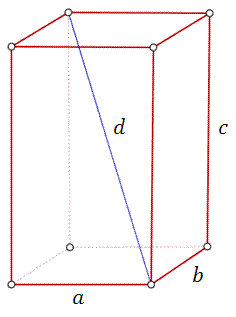
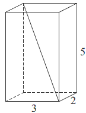
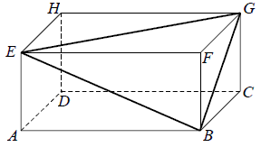

Prostopadłościan
Prostopadłościan - to graniastosłup, którego każda ściana jest prostokątem, a dowolne
dwie ściany są równoległe, albo prostopadłe.
 Wzór na pole powierzchni prostopadłościanu: \[P_c=2ab+2ac+2bc=2(ab+ac+bc)\] Wzór
na objętość prostopadłościanu: \[V=abc\] Wzór na długość przekątnej prostopadłościanu:
\[d=\sqrt{a^2+b^2+c^2}\]
Pole powierzchni całkowitej prostopadłościanu o wymiarach
\(5\times 3\times 4\) jest równe
A.\( 94 \)
B.\( 60 \)
C.\( 47 \)
D.\( 20 \)
A
Przekątna prostopadłościanu o wymiarach
\(2 \times 3 \times
5\) ma długość 
A.\( \sqrt{13} \)
B.\( \sqrt{29} \)
C.\( \sqrt{34} \)
D.\( \sqrt{38} \)
D
Przekątna prostopadłościanu o wymiarach \(3 \times 4 \times 5\) ma długość
A.\( 2\sqrt{5} \)
B.\( 2\sqrt{3} \)
C.\( 5\sqrt{2} \)
D.\( 2\sqrt{15} \)
C
Dany jest prostopadłościan o bokach długości \(1\) cm, \(2\) cm i \(3\) cm.
Przekątna tego prostopadłościanu ma długość
A.\( 4 \) cm
B.\( 2\sqrt{4} \) cm
C.\( \sqrt{13} \) cm
D.\( \sqrt{14} \) cm
D
W prostopadłościanie \(ABCDEFGH\) mamy: \(|AB| = 5, |AD| = 4, |AE| = 3\). Który z
odcinków \(AB, BG, GE, EB\) jest najdłuższy?

A.\( AB \)
B.\( BG \)
C.\( GE \)
D.\( EB \)
C
Wykaż, że przekątna prostopadłościanu o krawędziach długości \(a, b, c\) ma długość
\(\sqrt{a^2+b^2+c^2}\).
Dany jest prostopadłościan, którego podstawą jest kwadrat o krawędzi długości \(x +
5\), a wysokość ma długość \(2x + 4\). Podaj wzór, w postaci wyrażenia algebraicznego,
opisujący pole powierzchni tego prostopadłościanu. Przekształć to wyrażenie do najprostszej postaci.
\(P=10x^2+76x+130\)
Pole powierzchni całkowitej prostopadłościanu jest równe \( 198 \). Stosunki
długości krawędzi prostopadłościanu wychodzących z tego samego wierzchołka prostopadłościanu to \(
1:2:3 \). Oblicz długość przekątnej tego prostopadłościanu.
\(3\sqrt{14}\)